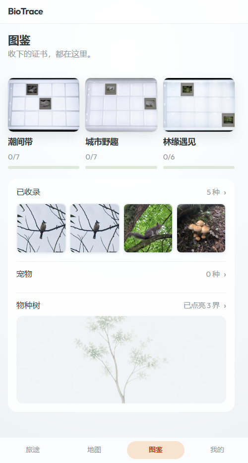
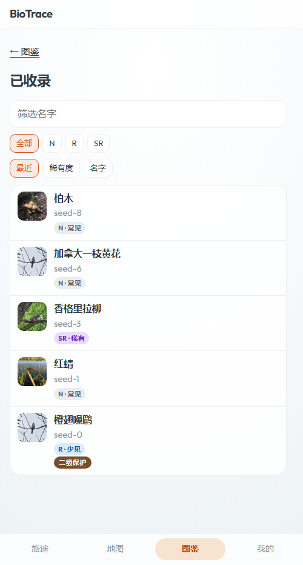
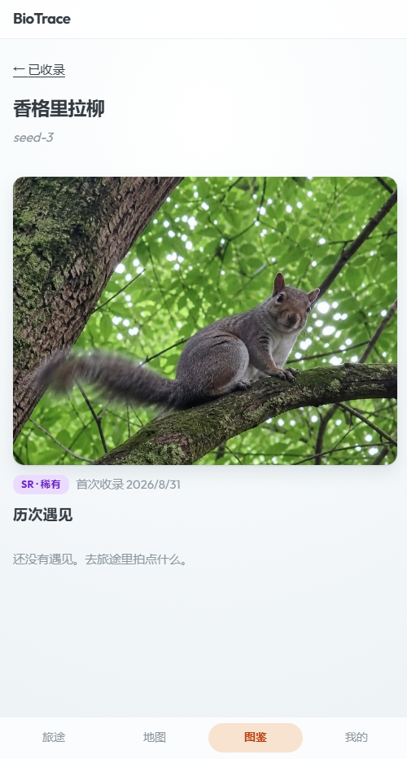

26 条 · 跨 6 个页面 · 状态：①②③ 已落（提交待回填）；④ 三句待你点头
无头 Edge 跑 127.0.0.1:5173 + 演示库，清透皮肤。
图鉴首页 /collection

物种索引 /collection/species

collection.empty 被两处共用，其中一处指错路| 渲染点 | 现状 |
|---|---|
| CollectionSpeciesPage.tsx:101 （物种索引 · 一条都没收录） | 还没有遇见。去旅途里拍点什么。 |
| CollectionSpeciesCardPage.tsx:190 （物种卡 · 「历次遇见」为空） | 还没有遇见。去旅途里拍点什么。 |
rebuildCollectionTaxonForUser（决定 entry 在不在，shared-progress.ts:146-183）：只按 userId + taxonKey + status='settled'，不看旅途；sightingsForTaxon（决定历次遇见，routes/collection.ts:104-129）：按 tripId ∈ 你所在的旅途 查。trip_id 挪到一个不存在的旅途，再打开物种卡——
sightings.length > 0 才画标题与列表）——
正如你说的，它既说不出「数据有误」，也不是真指路；「总要写点啥」不是理由。collection.speciesSightingsEmpty 已删。
trip-share.ts:199-240：reclaimSharedProgressForUserTrip 收回共享计入，然后
splitOwnObservationsToPrivateTrip 把你自己的观察搬到一条私有旅途（:221）——它们不会变成"没有旅途"；repairCollectionAfterObservationDeleted 专门修。trip_id 改到一个不存在的旅途造出来的状态——应用自己不产生。| key | 现值 | 建议 |
|---|---|---|
| collection.volumesEmpty | 还没有套册。 | 还没有套册 |
| collection.speciesNoMatch | 没有匹配的收录。 | 没有匹配的收录 |
| collection.empty | 还没有遇见。去旅途里拍点什么。（两段 → 句号合规） | — |
| collection.petsEmpty | 还没有宠物收录。拍到家养动物就会出现在这里。（两段 → 句号合规） | — |
speciesCount 与 petsCount 两条同文案| key | 现值 | 渲染点 |
|---|---|---|
| collection.speciesCount | {count} 种 | CollectionPage.tsx:242（「已收录」行右） |
| collection.petsCount | {count} 种 | CollectionPage.tsx:264（「宠物」行右） |
collection.lede：「证书」是清透的说法，但这条两套皮肤都显示| key | 现值 | 渲染点 |
|---|---|---|
| collection.lede | 收下的证书，都在这里。 | CollectionPage.tsx:155（图鉴首页 lede） |
onboard.* 当依据——onboard 是待审模块（清单里状态就是"待审"），
trips-final.html 当时还专门写过「到 onboard 那轮一并处理」。我自己记过「别拿未审模块的文案当依据」，又犯一次。trips.lede 当初是编号候选 + 各自理由 + 我标倾向（L1/L2/L3、E1/E2/E3），你拍板 L2+E3；
方向也是你给的——「短句对句、有气魄、给用户分量」，不要平铺直叙。我这次却自己在填字。
trips.lede「所行之处，皆归于此。」（L2，你拍板）·
settle.lede「已经识别出这是什么了。」（常规版定稿）·
清透的 settle.lede「这趟遇见的生命，现在有名字了。」·
日光的 settle.lede「此行所见，已录其名。」·
定稿 slogan「识尽众生，山海入怀」。onboard.*（待审）、album.*（待审）、tree3d.*（待审）等一切未过模块。
trips.lede 那副对句骨架（所…皆…于此），换成图鉴的词「录」；八字两句，收得住。它是兜底，与主题句同档但不抢。voices/clear.ts）trips.lede 的「皆归于此」；句尾「了」是它那套的说话方式（「现在有名字了」）。settle.lede）；比 Q1 多一句交代，也长一点。voices/daylight.ts）settle.lede「此行所见，已录其名。」——同一副文言骨架（所见 / 所录）；「入册」是它的 claim 词、「图版」是它的物件。settle.lede 最贴（此行所见 / 此行所录）；代价是「入图版」不如「入册」像动作。zh.ts 基础表 + voices/clear.ts + voices/daylight.ts），跑双闸后单独提交。
每行：key · 文案 · 渲染点 · 判断依据
CollectionPage.tsx:154 h1（也作套册页的兜底标题 CollectionVolumePage.tsx:236）— 页面名，两个字CollectionPage.tsx:214、CollectionVolumePage.tsx:229 — 纯数值，不解释settle.volumeCeremonyCompleteTitle 同文案，但不合并：它在可文案区，合并进固定区会丢掉主题覆盖粒度（规范 §二）CollectionVolumePage.tsx:294 空格子的 title — 两字，不解释CollectionPage.tsx:285 — 「界」是物种树的术语，如实CollectionPage.tsx:239 行标签、CollectionSpeciesPage.tsx:94 h1、CollectionSpeciesCardPage.tsx:131,141 返回标签与兜底标题 — 四个位置同一个词，是同一个概念CollectionVolumePage.tsx:213、CollectionSpeciesPage.tsx:92、CollectionPetsPage.tsx:54、SpeciesTree3D.tsx:157）— 四处都回图鉴，用同一个词是对的（key 名叫 volumeBack 但文案是「图鉴」，名字与用途不符，属命名问题、不是文案问题，本轮不动）CollectionSpeciesPage.tsx:112 输入框 placeholder — 说清输入框收什么:122 稀有度筛选第一个 chip — 两字:80-82 排序三选 — 三个都是名词，成套CollectionSpeciesCardPage.tsx:183、CollectionPetCardPage.tsx:192 — 事实 + 日期CollectionSpeciesCardPage.tsx:188 小节标题 — 「遇见」这条术语线的词CollectionPetsPage.tsx:95 宠物卡角标 — 与「{count} 种」区分得开（种 = 种类数，次 = 次数）CollectionPetsPage.tsx:56 h1、CollectionPage.tsx:261 行标签、CollectionPetCardPage.tsx:52,141 — 同 speciesTitle，一个概念一个词CollectionPetsPage.tsx:63 — 同族空态里写得最好的一条（陈述 + 出路，句号合规）CollectionPage.tsx:282 行标签、CollectionSpeciesCardPage.tsx:141、CollectionPetCardPage.tsx:49 返回标签 — 页面名CollectionPage.tsx:83、CollectionTreePage.tsx:73、CollectionSpeciesPage.tsx:53、CollectionPetsPage.tsx:31）— 最短的真失败句CollectionVolumePage.tsx:105,107 — 比上一条具体（这一页就是套册）
speciesCount 与 petsCount 合并——认不认？collection.lede 要不要自己的说法？（要的话你给句子，或我先写一稿给你挑；不要就共用这一句。）
本页零改动。定了我改 zh.ts（+ 视情况 CollectionSpeciesCardPage.tsx 与 voices/daylight.ts），跑 check:copy 与 check-dead-keys，单独提交。